J-Link RTT 详解和使用
@toc
一、简介
SEGGER 的 Real Time Transfer（RTT）是一种用于嵌入式应用的交互式用户 I/O 技术。它结合了 SWO 和半主模式的优势，在非常高的性能下运行。
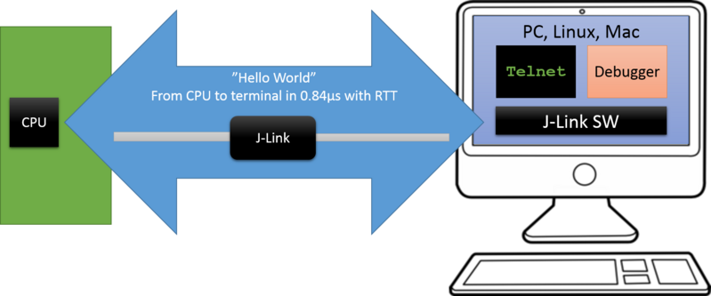
使用 RTT 时，可以在不影响目标微控制器的实时行为的情况下， 能够高速双向通信，既可以输出调试信息，也能够从外部输入相关的控制命令。RTT可以在两个传输方向（输出和输入）上支持多个通道，不同的通道可用于不同的目的。
RTT 默认实现使用每个传输方向一个通道，这些通道用于可打印的终端输入和输出。使用 J-Link RTT Viewer 工具，一个通道可用于多个“虚拟”终端，并允许将打印输出到多个窗口（例如，一个用于标准输出，一个用于错误输出，一个用于调试输出），只需一个目标缓冲区即可。另外，一个向上的（到主机）通道可以用于发送分析或事件跟踪数据（例如，用于 SEGGER SystemView）。
二、RTT 如何工作
RTT 位于 RAM 中，使用 SEGGER RTT 控制块结构和每个通道配置方向的环形缓冲区。可配置的通道最大数量可以在编译时设置，每个缓冲区可以在运行时由应用程序配置和添加。
- 上行和下行缓冲区可以单独处理
- 每个通道都可以配置为阻塞或非阻塞
- 阻塞：防止数据丢失，但可能会暂停应用程序
- 非阻塞：将丢弃多余信息，即使没有连接调试器，应用程序也能实时运行
下图显示了目标中 RTT 的简化结构。以下将解释每个元素。
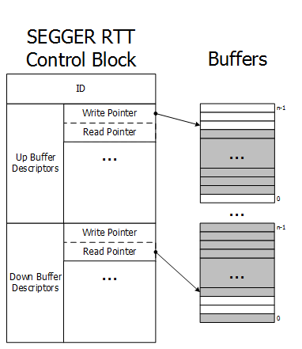
1、RTT Control Block
RTT control block 包含多个元素以允许 RTT 工作。它位于 RAM 中。它始终以一个 ID 开头，该 ID 用于：
- 让控制块（自动）在内存中检测被连接的 J-Link
- 控制块有效性检查
1.1 Buffer Descriptors
缓冲描述符提供有关每个通道的环形缓冲区信息，J-Link 使用这些信息从目标设备读取和写入信息。可能存在任意数量的向上（目标 -> 主机）/向下（主机 -> 目标）缓冲描述符，最多不超过允许的通道数上限。
- 对于上行缓冲区（Up Buffer）
- 写指针仅由目标写入
- 读指针仅由调试探针（
J-Link、Host）写入。
- 对于下行缓冲区（Down Buffer）
- 写指针仅由调试探针（
J-Link、Host）写入 - 读指针仅由目标写入。
- 写指针仅由调试探针（
通过如上操作，确保了不会发生竞态条件。当读和写指针指向同一元素时，缓冲区为空。
2、Buffer 缓冲区
环形缓冲区也位于 RAM 中，但不属于 RTT 控制块的一部分。缓冲区大小可以单独配置，针对每个通道和每个方向。上图缓冲区的灰色区域显示了包含有效数据的部分。
3、Requirements
RTT 无需任何额外的引脚或硬件，即使通过标准调试端口连接到目标设备的 J-Link 也是如此。它不需要对目标或调试环境进行任何配置，甚至可以用于不同的目标速度。
RTT 可以在并行于正在进行的调试会话中使用，而不会干扰，也可以完全不使用任何 IDE 或调试器。
4、Performance
RTT 的性能显著高于任何其他用于将数据输出到主机 PC 的技术。平均一行文本可以在一微秒或更短的时间内输出。基本上只需要执行单个 memcopy() 的时间。
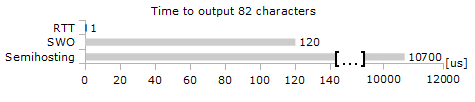
5、Memory footprint
RTT 实现代码使用约 500 字节 ROM 和 24 字节 ID 加 RAM 中控制块每通道 24 字节。每个通道都需要一些内存用于缓冲区。推荐的大小为上行通道 1 kByte，下行通道根据输入/输出负载为 16 到 32 字节。
三、API 函数
RTT 实现了以下的 API 函数，调用时必须包含头文件 #include "SEGGER_RTT.h"：
| API 函数 | 含义 |
|---|---|
SEGGER_RTT_ConfigDownBuffer() |
配置或通过指定名称、大小和标志来添加一个下缓冲区。 |
SEGGER_RTT_ConfigUpBuffer() |
配置或通过指定名称、大小和标志来添加一个上行缓冲区。 |
SEGGER_RTT_GetKey() |
读取 SEGGER RTT 缓冲区 0 中的一个字符。主机之前已将数据存储在那里。 |
SEGGER_RTT_HasKey() |
检查 SEGGER RTT 缓冲区中是否至少有一个可读字符。 |
SEGGER_RTT_Init() |
初始化 RTT 控制块 |
SEGGER_RTT_printf() |
发送格式化的字符串到主机 |
SEGGER_RTT_Read() |
从主机之前存储的任何 RTT 下行通道中读取字符 |
SEGGER_RTT_SetTerminal() |
设置“虚拟”终端，在通道 0 发送接下来的数据 |
SEGGER_RTT_TerminalOut() |
发送一个字符串到特定的“虚拟”终端 |
SEGGER_RTT_WaitKey() |
等待至少一个字符在 SEGGER RTT 缓冲区 0 中可用。一旦有字符可用，就将其读取并返回 |
SEGGER_RTT_Write() |
发送数据到 RTT 通道上的主机 |
SEGGER_RTT_WriteString() |
将一个以 \0 结尾的字符串通过 RTT 写入上行通道 |
SEGGER_RTT_GetAvailWriteSpace() |
返回环形缓冲区中可用的字节数 |
四、移植和使用
下载链接：J-Link download。
安装完后，来到目录：JLink/Samples/RTT，这个目录存放的就是 RTT 的代码：
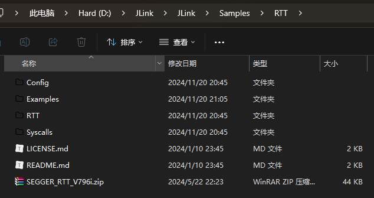
1、移植
将 RTT 和 Config 两个目录中的五个文件复制到工程目录下即可，配置过程很简单，就不再细说，最终结果如下：
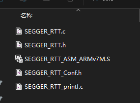
然后，我们就可以在我们的工程中使用 RTT 了，别忘记加头文件 #include "SEGGER_RTT.h"。
2、RTT 的使用
在目录
JLink/Samples/RTT/Examples中提供了四个例程，可以参考一下使用方法
2.1 打印输出
1 |
|
在 J-Link 下载目录中找到 JLinkRTTViewer.exe 工具打开：
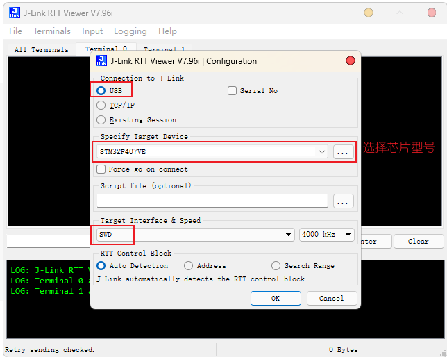
当成功连接时会有如下提示：
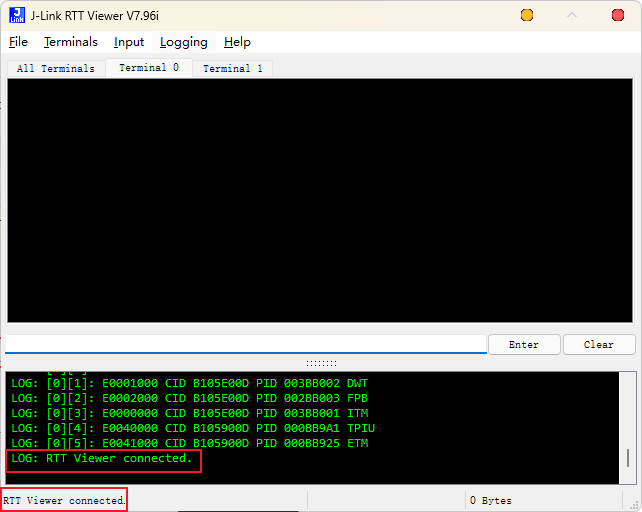
烧录好程序，运行结果如下：
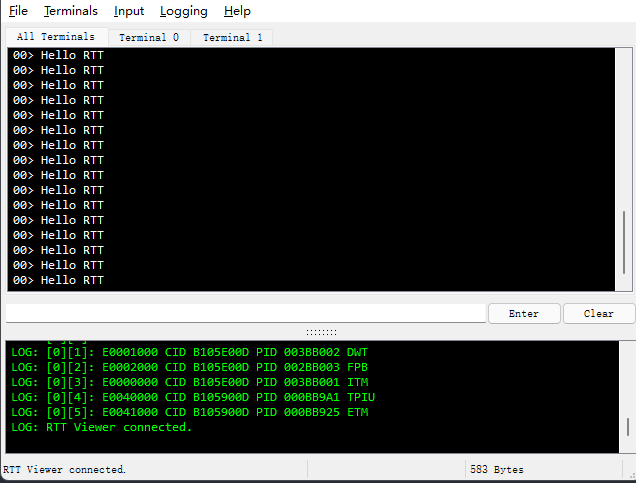
效果和我们平时使用串口打印时是一样的。
2.2 多通道打印
前面我们说了，一个通道可用于多个“虚拟”终端，下面来看一下：
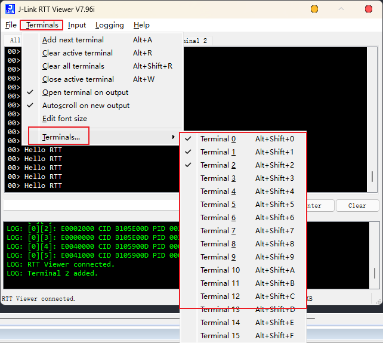
可以看到，一个通道最多可以设置 16 个虚拟终端，下面还是通过一个例子来看一下：
1 |
|
结果如下：
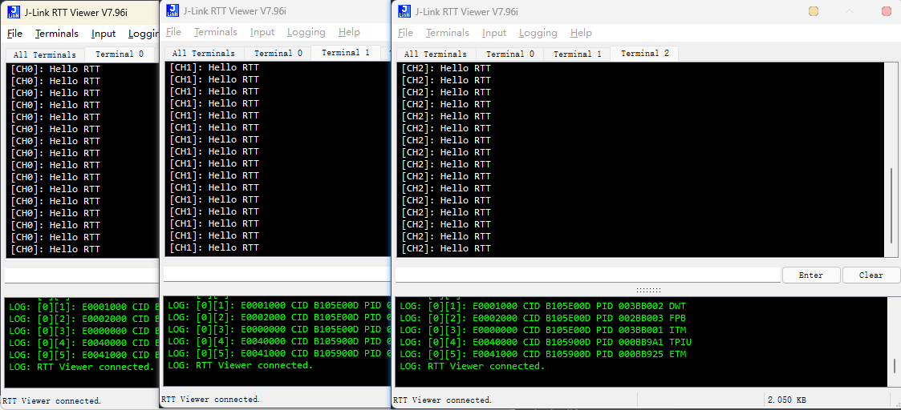
有时候我们发现我们的信息不能完全的打印出来，可能是因为缓冲不够，默认缓冲区大小事1K字节，如果不够可以改大一点。
见文件 SEGGER_RTT_Conf.h：
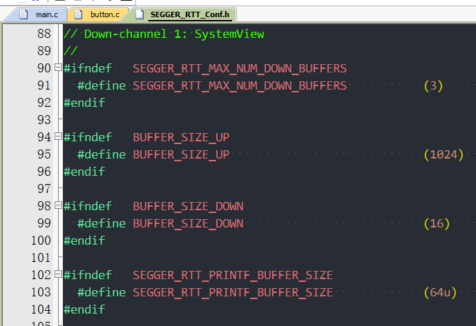
2.3 控制打印字符颜色
见文件 SEGGER_RTT.h：
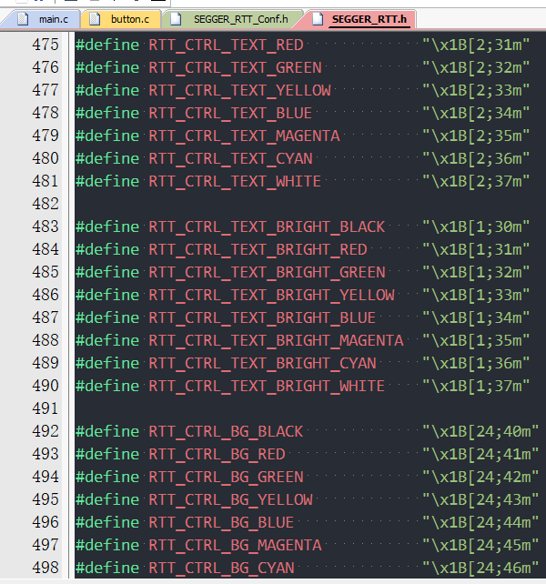
1 | while (1) |
结果如下：
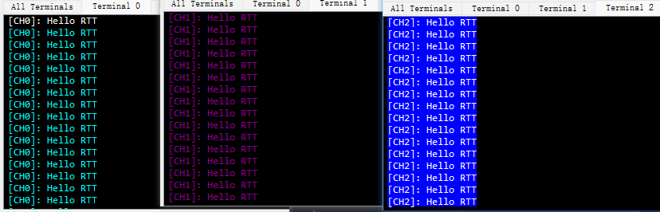
2.4 printf 重定向
项目中使用 printf 的地方非常多，如果可以直接修改 printf 重定向到 RTT 组件，则会非常方便。使用的方法是直接使用 RTT 提供的 API 来实现 fputc。
1 | // 重定义fputc函数 |
样例：
1 | while (1) |
结果如下：
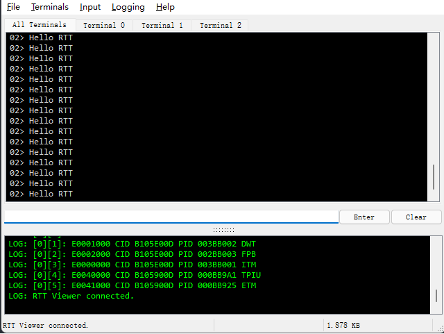